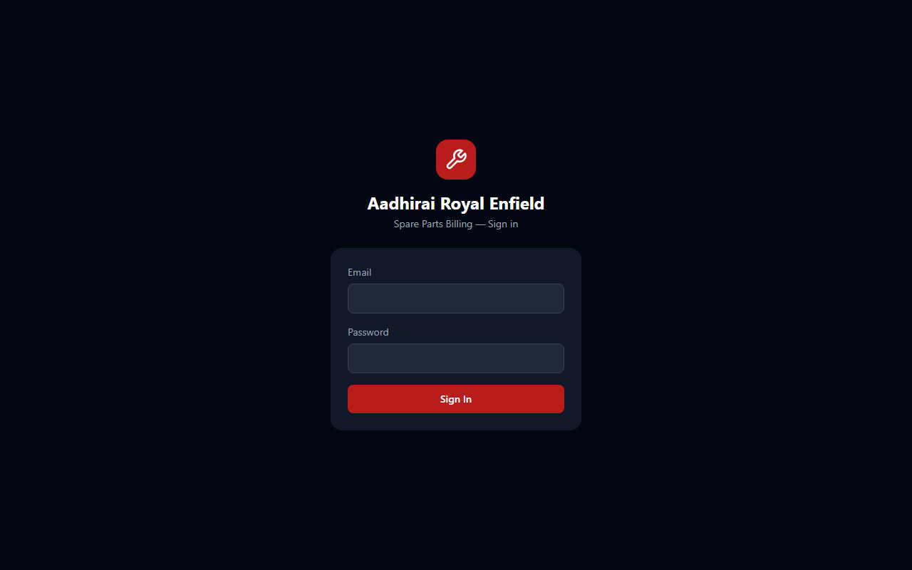
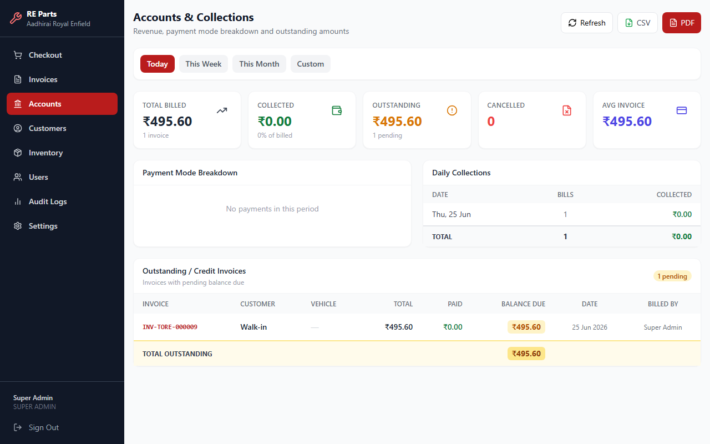
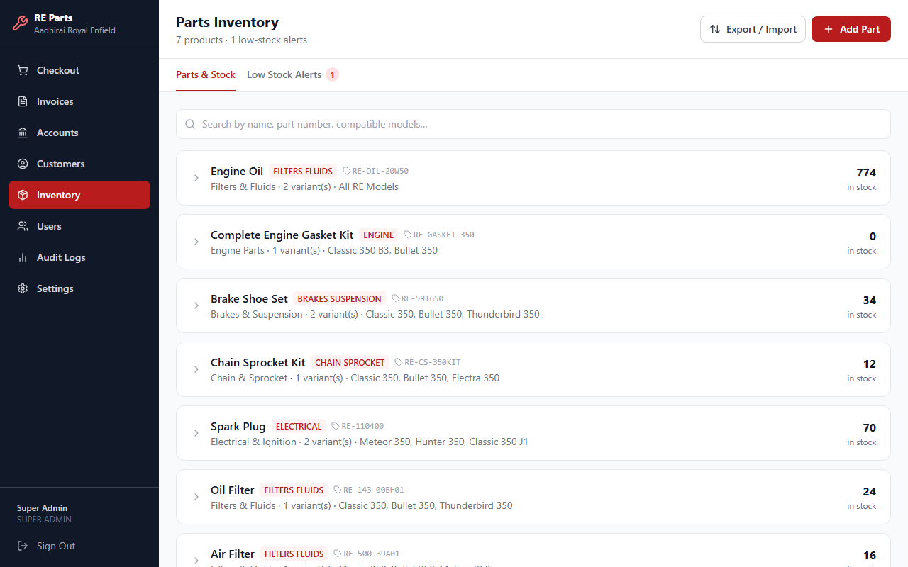
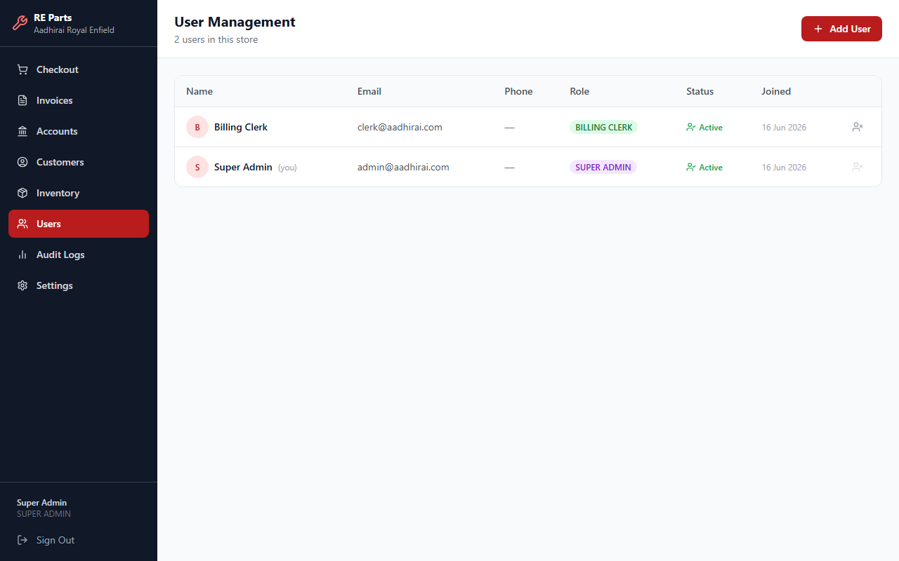

Signing In
Access the system with your store credentials

Login page — https://billing.h2owaterpurifier.com
- Open https://billing.h2owaterpurifier.com in any browser.
- Enter your Email address.
- Enter your Password.
- Click Sign In. Admins and managers land on the Dashboard; billing, inventory, and service staff land directly on the screen for their role.
Admin: admin@aadhirai.com / Admin@1234
Clerk: clerk@aadhirai.com / Clerk@1234
Change these after first login.
Dashboard Admin / Manager
Your landing page — a snapshot of what needs attention today
The Dashboard is the first thing Super Admins and Store Managers see after signing in. It brings together the numbers you'd otherwise have to check across several separate pages, each one linking straight through to its full page.
- Quick Actions at the top — jump straight into New Sale, New Quotation, or Register AMC.
- Today's Sales and Outstanding — today's billed and collected totals, and how much is still owed across open invoices.
- Low Stock Alerts — how many products are at or below their reorder threshold right now.
- Pending AMC Approvals and Overdue Service Visits — only shown if your account has the Service module enabled.
Checkout
Create a new sale and generate an invoice

Checkout — cart and order summary
How to create a bill
- Search for a customer by name or phone number in the top search box. Leave blank for a walk-in sale.
- Search for a product by name, item code, or barcode in the search box below it. Click Find, press Enter, or scan with a barcode scanner / the in-app camera scanner.
- The item appears in the cart. Adjust the quantity if needed.
- Repeat to add more items. Optionally click Apply Discount for a flat or percentage discount.
- Select the Payment Mode (Cash, UPI, Card, etc.), enter the amount, and add the payment. You can add more than one payment mode to split a payment.
- Click Complete Sale to generate the invoice and print a receipt.
Quotations
Draft a price quote a customer can accept later, without committing stock yet
- Click Quotations in the sidebar, then New Quotation.
- Search for a customer and add items, the same way as Checkout.
- Optionally set a discount and a Valid Until date, then save.
- When the customer is ready to buy, open the quotation and click Convert to Invoice — this creates the real invoice, deducts stock, and records the payment, exactly like a normal sale.
- Changed your mind, or the customer walked away? Open the quotation and click Cancel Quotation — only an open (not yet converted) quotation can be cancelled.
Invoices
View, search and manage past bills

Invoices list — searchable with date range filter and status filter
- Click Invoices in the left sidebar.
- Use the search box to find by invoice number, customer name, or phone.
- Use the date pickers and status dropdown (All / Paid / Partial / Cancelled) to filter.
- Click the eye icon on any row to view full invoice details, print a receipt, or act on it.
Closing out a partial / credit sale
Sold something on credit, or the customer only paid part of the bill? Open the invoice and click Record Payment — the amount box is pre-filled with the exact balance still due, but you can enter less for another partial top-up. The invoice status updates automatically: it stays Partial until the full balance is collected, then flips to Paid on its own. Every repayment is listed under Payments on that invoice, so there's a full record of how it was paid off over time.
Accounts & Collections Admin / Manager
Revenue summary, payment breakdown, outstanding amounts, and GST reporting

Accounts — daily/weekly/monthly revenue with outstanding invoices
- Click Accounts in the left sidebar.
- Choose Today / This Week / This Month / Custom to change the period.
- The top cards show: Total Billed, Collected, Outstanding, Cancelled, Avg Invoice.
- The Payment Mode Breakdown shows how much was collected via Cash, UPI, Card, etc.
- The Outstanding / Credit Invoices table lists bills that are not fully paid.
- Click CSV or PDF at the top to export the collections report.
GST Report
Further down the same page is a dedicated GST Report, for whenever you need invoice-level GST figures rather than just a revenue total — it lists every invoice in the selected period with its taxable value, tax amount, and total, along with the customer's GSTIN where one is on file. Export it as CSV, Excel, or PDF; it uses the same date range as the rest of the Accounts page, and cancelled invoices are excluded.
Inventory
Manage stock, add new products and monitor low-stock alerts

Inventory — products with categories, item codes and stock counts
- Click Inventory in the sidebar.
- Search by product name, item code, or brand.
- Click the arrow on any row to expand and see its variants (e.g. different sizes or pack quantities).
- Click + Add Product to add a new product with a variant, price and opening stock.
- Click the pencil icon on a product to edit it — its Variants list is shown right there too, each with its own edit pencil, so you don't need to hunt for it separately.
- Click the power icon to deactivate a product you no longer sell — it disappears from Checkout/Quotation search but its past invoices stay intact. Click again to reactivate.
- Click the Low Stock Alerts tab to see products below their reorder threshold.
- Use Export / Import to bulk-update stock via CSV.
Physical Product — normal stocked items; comes in Bulk Qty mode (a running total) or Serial-tracked mode (each unit tracked by its own serial number).
Service or Fee — labor, visit charges, installation fees; never has physical stock and is always sellable.
Customers
Manage customer records and purchase history

Customers — searchable list with contact details and purchase history
- Click Customers in the sidebar.
- Search by name, phone, or email.
- Click + Add Customer to register a new customer, or click an existing row to view their profile and invoice history.
- Click the pencil icon to edit a customer's details, or the toggle icon to deactivate one you no longer deal with — their history stays intact, they just drop out of active search.
Service & AMC Service module
Track annual maintenance contracts and the visits scheduled under them
This section only appears for accounts with the Service module enabled. An AMC is the service-coverage record for one product sold to one customer — it's created automatically whenever a service-tracked product is sold or quoted, or you can register one directly for a customer's existing/pre-owned unit.
Registering an AMC directly
- Click Register AMC (top-right of the Service page, or from the Dashboard's Quick Actions).
- Pick a customer and a service-tracked product, set the AMC period and service frequency, and save. Use Add Another Product to register several products for the same customer in one sitting.
- For onboarding an existing customer base in bulk, use the CSV import tab instead — download the template, fill it in, and upload it.
Pending Approval
Every AMC created from an actual sale starts here, waiting for review. Approve it (setting the AMC period and service frequency) to activate it and schedule its first visit, or Reject it if it shouldn't be tracked.
Service Jobs
Every scheduled or completed visit lives here. Use the search box, status filter, sort dropdown (Due Date / Customer / Product), and the date-range picker to find what you need — it opens showing visits from 15 days ago to 30 days ahead by default. From a job row you can Reschedule, Assign/Reassign a technician, Bill Customer once there's a charge to collect, or Cancel the job.
All AMCs
A dedicated list of every AMC record regardless of status, with the same kind of search, sort, and date-range filtering as Service Jobs (pending or not-yet-scheduled AMCs always show, since they're not date-scoped the same way). For an active AMC you can Edit its period/frequency or Cancel it; for a cancelled one, Reactivate undoes a mistaken cancellation — it goes straight back to Active if it had already been approved, or back to Pending Approval if it was a claim that was rejected before ever being reviewed.
Notifications & Next Service Service module
What needs your attention, and what's coming up
Notifications
Click the bell icon in the top bar. Whenever a technician closes a service visit, an entry appears here with their notes/customer feedback. For each one you can Mark OK (nothing more to do), or Add Action Item to leave yourself a follow-up note that stays visible until you separately Resolve it. The bell's number badge counts unresolved notifications plus AMC visits due soon.
Next Service
A read-only lookahead of upcoming and overdue service visits — a quick answer to "what's coming up", without any reschedule/assign buttons cluttering it (do that from Service Jobs instead). It defaults to the window configured in Settings → Service Settings, with a dropdown to look further or closer ahead for just this view.
User Management Admin only
Add and manage staff accounts

User Management — staff list with roles and account status
- Click Users in the sidebar (Super Admin / Store Manager).
- Click + Add User to create a new staff account with a name, email, password, phone, and Role.
- Click the pencil icon on a user to edit their name, phone, or role. Email can't be changed here — it's used to route their login to the right account.
- Click the key icon to reset a locked-out staff member's password — a temporary password is generated and shown once, so make sure to hand it to them before closing that dialog.
- Click the toggle icon to deactivate/reactivate an account.
Role Permissions
| Feature | Super Admin | Store Manager | Billing Clerk | Inventory Manager | Service Staff |
|---|---|---|---|---|---|
| Create Bills / Quotations | ✔ | ✔ | ✔ | — | — |
| Record Invoice Payments | ✔ | ✔ | ✔ | — | — |
| View Accounts / GST Report | ✔ | ✔ | — | — | — |
| Manage Inventory | ✔ | ✔ | — | ✔ | — |
| Manage Customers | ✔ | ✔ | ✔ | — | — |
| Approve/Manage AMCs & Jobs | ✔ | ✔ | — | — | — |
| Work Assigned Service Jobs | ✔ | ✔ | — | — | ✔ |
| Manage Users | ✔ | ✔ | — | — | — |
| View Audit Logs | ✔ | ✔ | — | — | — |
| Change Settings | ✔ | — | — | — | — |
Audit Logs Admin only
Full trail of every action taken in the system

Audit Logs — every invoice, stock and user action with timestamps and IP addresses
- Click Audit Logs in the sidebar.
- Filter by Action type (Invoice Create, Payment Received, Stock In, Return, etc.).
- Filter by date range to narrow results.
- Click Details on any row to see before/after values for that change.
Settings Admin only
Configure store information, service scheduling, and payment QR

Settings — store name, address, GSTIN and UPI QR configuration
- Click Settings in the sidebar.
- Update Store Name, Phone, Address, and GSTIN, then Save Changes.
- If the Service module is enabled, use Service Settings to set how many days ahead the Next Service screen and the bell's due-soon count should look by default.
- Under Payment QR Configuration, upload a static UPI QR image to show on invoices.
Mobile App (Android)
Install Aadhirai Billing as an app on your phone — same login, same data
This is the same website wrapped as an installable Android app — useful mainly for checkout and service visits, since it gives the in-app barcode/QR scanner reliable access to your phone's camera. It isn't on the Google Play Store; you install the file directly. Because it always loads the live site, every feature described in this guide is already available in the app the moment it ships on the website — there's nothing to reinstall for a feature update.
Installing it
- Open this page on your Android phone and tap Download for Android above. (Tapping it on a desktop just saves the file — you need to move it to the phone, or open this page in the phone's own browser instead.)
- Android will likely warn that it blocked an install from an unknown source — this is expected, since the app isn't distributed through the Play Store. Tap Settings on that warning, then allow installs from this app (usually Chrome or your Files app).
- Go back and open the downloaded file again, then tap Install.
- Open Aadhirai Billing from your app drawer and sign in with the same email and password you use on the website.
- When the in-app scanner asks for camera permission, allow it — needed for scanning barcodes/QR codes during checkout.
Frequently Asked Questions
Common questions and answers